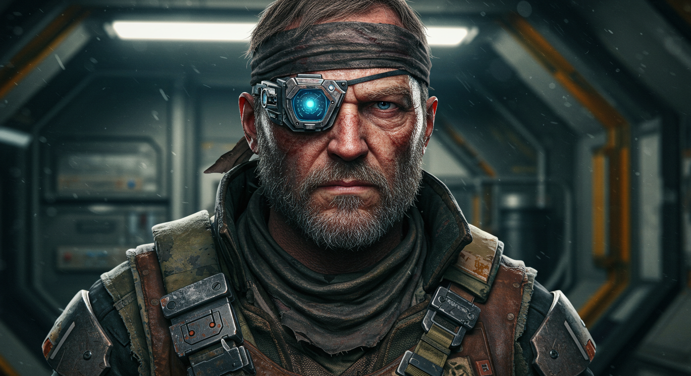
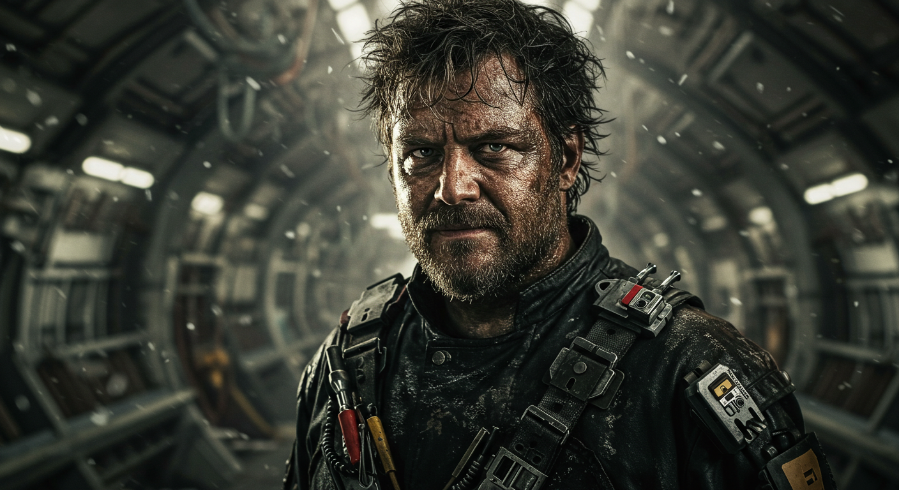
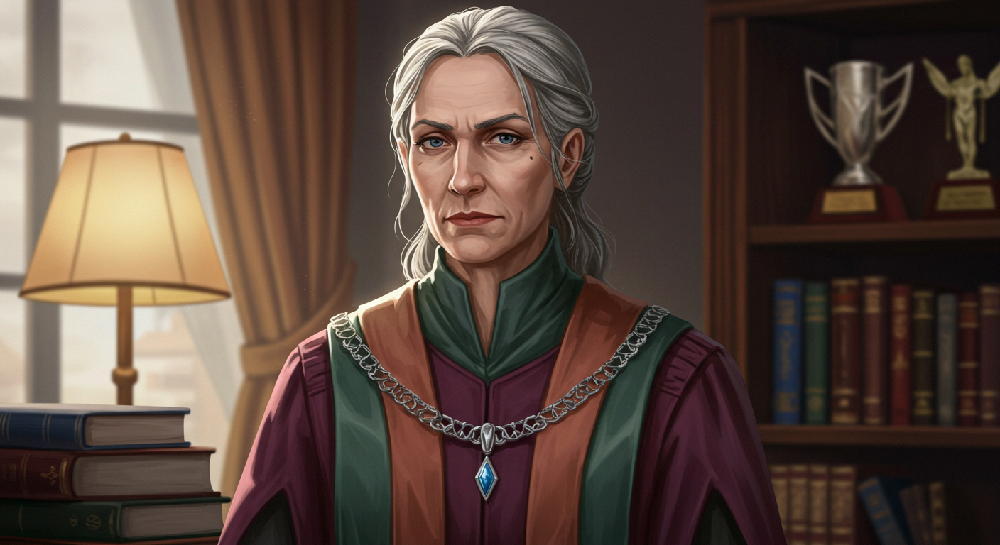
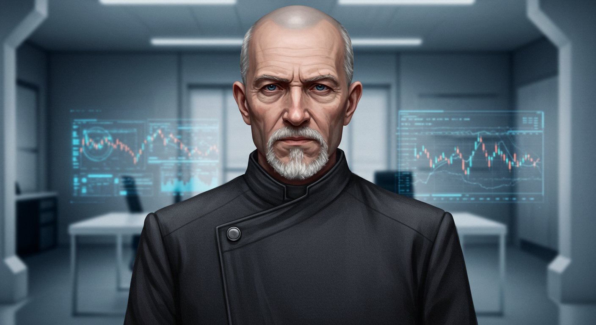
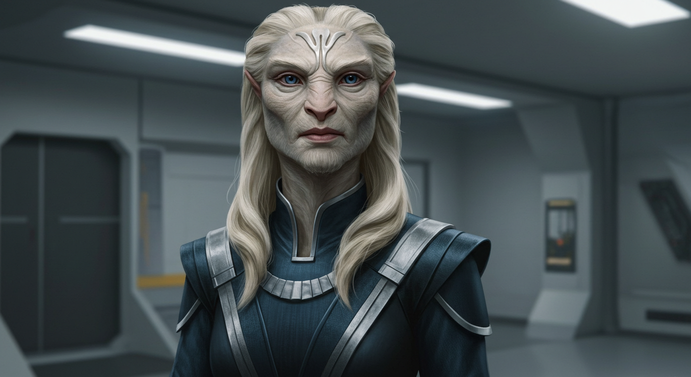

Filters
Story
Location
Race
Status
Organization
Role

Professor Albericiepr
Professor at the university who provided the crew with their first mission.
Nanak Bahadur
A Zhodani engineer and mechanic, Nanak's technical expertise keeps the ship running smoothly. His military background provides valuable combat experience and tactical knowledge.
Skills & Abilities:
- Engineering (Expert)
- Mechanics (Expert)
- Combat Training (Advanced)
- Ship Systems (Expert)
- Electronics (Advanced)
Equipment:
- Engineering Toolkit
- Combat Armor
- Ship Repair Drones
- Technical Scanner
Intendant Voriepr
Postgraduate leader of the research team on Drenalch.
Researcher Taeliepr
Xenoanthropology student on the research team.
Technician Renniepr
Specialist in ancient technology on the research team.
Kael Vor
Ghenani undergraduate student assisting Intendant Voriepr.
Settlement Overseer Jarnak
Gender: Male
Age: Middle-aged, but appearing older due to the stresses of his position
Appearance:
- Muscular build, short legs, pale skin, and fair eyes, typical of the Ghenani.
- Wears simple, practical clothing suitable for the warm climate, but with subtle touches of authority, such as a decorated belt or armband.
- His face is weathered and lined, reflecting the years spent dealing with the challenges of his settlement.
- His eyes are often tired and carry a hint of weariness.
High Archivist Tarani
High Archivist Tarani is a quintessential Ghenani bureaucrat. She is meticulous, dedicated to procedure, and deeply ingrained in the Ghenani administrative system. She is not unkind, but she values order and adherence to regulations above all else. She is a product of a society that has maintained peace through intricate rules and protocols, and she embodies that philosophy.
Ambassador Voristlas
The Zhodani ambassador to Drenalch, whose embassy is located in a nearby Ghenani city. A refined and diplomatic Zhodani, he is patient but clearly frustrated by the slow pace of the Ghenani bureaucracy.
He explains the complexities of the Ghenani system and the challenges of obtaining the necessary permits. While he offers to provide the crew with guidance and introductions, he emphasizes that he cannot directly intervene on their behalf.
Current Status: Missing

Echo Keeper Lobon
A severe and dedicated leader of the Echo Keepers, Lobon is driven by a desperate need to protect his people from the "Sleeping Sickness" (radiation poisoning). While deeply distrustful of outsiders, his caution stems from rational concern rather than blind zealotry.
His leadership reflects the Echo Keepers' core values of protection and preservation, tempered by the immediate threat of radiation poisoning that faces his people. His decisions, while often severe, are made with the well-being of his people and the preservation of their ancient heritage in mind.
Intendent Lyraviepr
Assistant to Ambassador Voristlas, Lyraviepr's story is one of misguided intentions and dire consequences. Initially reported missing at the start of the mission, the Ambassador suspected she was 'going native' among the Ghenani.
Her true fate was more complex: she was discovered at the Ancient's ruins, attempting to return a stolen artifact. Unaware of the dangerous radiation present at the site, her actions were driven by a desperate attempt to make amends for her theft.
Current Status: In the custody of Echo Keeper Lobon, facing the threat of the death penalty for the theft of Ancient technology.
Controller Wadden
Prole worker at the Downport Control Tower on Drenalch
Arden Kincaid
Arden Kincaid is the charismatic media personality and 'faceman' of the Institute for Geophysical Studies (IGS). As the party's IGS liaison upon arrival at Tiffanye, he serves as their primary contact with the organization.
Appearance
Arden is a charismatic media personality in his 40s with a warm, trustworthy smile and sharp, intelligent eyes. He wears a stylish, dark grey IGS-branded media jacket over a casual shirt.
Role
Arden serves as the IGS's primary media personality and liaison, managing public relations, coordinating with expedition teams, and navigating Tiffanye's complex bureaucratic landscape. He oversees the production of IGS documentaries and educational content.
Personality
Arden combines media savvy with genuine concern for the IGS's mission. He's charming and persuasive, able to put people at ease while delivering difficult news. His background in media gives him excellent communication skills.
Quartermaster Valerius ("Val")
Quartermaster Valerius ("Val") is the pragmatic logistical chief of The Nest, with ambitions that extend far beyond simple piracy. Val's long-term goal is not to escape the criminal life, but to transform The Nest into a legitimate operation.
Appearance
Val is sharp, calm, and appraising, with a neat appearance that stands in stark contrast to the station's grime. Their professional demeanor suggests a background in legitimate business or logistics.
Ambitions
Val sees The Nest not as a pirate den, but as a potential legitimate, independent freeport and trade hub in the chaotic Vanguard Reaches. The sale of the Nova Core to the Tyrannus Combine was intended as seed money for this grand ambition. Val plans to use the massive payment to buy political legitimacy from a minor local faction, systematically repair and upgrade The Nest's systems, and oust Vayne and his violent cronies, replacing them with a paid security force.
Recent Activities
Val assisted the party in securing the Nova Core and escaping the Nest, in return for a promise to turn over 90% of the funds acquired by returning the Ancients device back to the Ghenani (which, in this case, was nothing). Last seen in the vicinity of The Nest.
Dockmaster "Gristle"
Dockmaster "Gristle" is a massive, grease-stained man with a cybernetic arm that whirs loudly. He oversees the docking operations at The Nest and is known for his corrupt practices and demands for tribute from visiting ships.
Appearance
Gristle is a massive, grease-stained man with a cybernetic arm that whirs loudly. He typically sits on a crate, scratching a grimy beard, and eyes visitors with bored avarice.
Personality
Gristle is corrupt and opportunistic, using his position as dock master to extract tribute from visiting ships. He's known for his demands for "discretion fees" and threats to file reports with the Enforcers if his demands aren't met.
Typical Demands
"Another run for Vayne's little parcel service," he grunts. "Tribute's due. A bottle of something that burns, or a few hundred creds for my 'discretion fund'. Unless you'd rather I file a full 'Unexpected Mass Signature' report with the Enforcers?"
Councillor Elara Vance
Councillor Elara Vance is the representative for the Independent Artisans Guild on Tiffanye's Collective Council. A former academic from Tiffanye University, she brings a scholarly perspective to the council's deliberations.
Background
As a former academic from Tiffanye University, Councillor Vance represents the Independent Artisans Guild, an organization that values traditional craftsmanship and academic integrity. Her position gives her influence over research funding and institutional policies.
Personality
Councillor Vance is principled but cautious. She values academic integrity and fair play, and responds well to logical, evidence-based arguments rather than emotional appeals.
Seneschal Torvin Rhys
Seneschal Torvin Rhys is the chief aide to the head of the Startown Industrial Combine on Tiffanye. A pragmatist through and through, his primary concern is the flow of trade and credits in the system.
Position
As the chief aide to the head of the Startown Industrial Combine, Seneschal Rhys wields significant influence over industrial policy and trade regulations on Tiffanye. The Combine represents the major manufacturing and industrial interests in the system.
Personality
Rhys is pragmatic and focused on economic benefits. He's open to arguments about how research and discoveries can create new markets and opportunities, and prefers concrete benefits over emotional appeals.
Lady Fyerla of the Hlyueawi
Lady Fyerla of the Hlyueawi is a sharp, pragmatic Aslan female who holds the commercial reins for her clan's interests in the Vanguard Reaches subsector. In Aslan society, females handle commerce and finance.
Cultural Context
In Aslan society, females traditionally handle commerce, finance, and trade, while males focus on military and political leadership. This makes Lady Fyerla the primary decision-maker for her clan's economic interests in the region.
Personality
Lady Fyerla is direct and results-oriented in her negotiations. She values efficiency and clear communication in business dealings, and prefers to focus on practical benefits and mutual advantage.